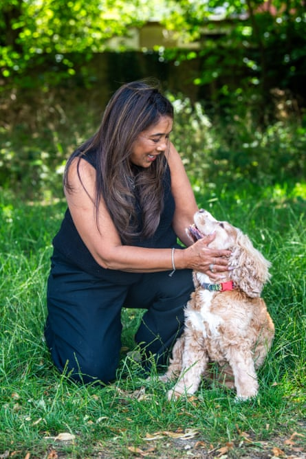
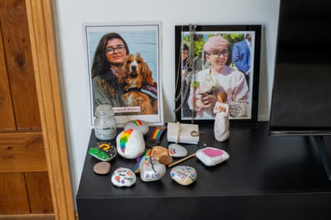

J ust a few hours before she ended her life, Immy Nunn seemed happy. She and her mother, Louise, had been shopping and had lunch. It was the final day of 2022 and Immy, who was 25, appeared positive about the new year. She talked about taking her driving test and looking for a new flat. She was excited about the opportunities her profile on TikTok was bringing her; known as Deaf Immy, she had nearly 800,000 followers, attracted by her honest and often funny videos about her deafness and her mental health.
By the early hours of the next morning, Immy was dead, having taken poison she bought online, almost certainly after discovering it through an online pro-suicide forum.
On a sunny day, kitchen doors open to the garden, Louise sits at her table; every so often she glances at the photographs of her daughter. Immy’s assistance dog, Whitney, now lives with her parents, and wanders around, stopping occasionally to be stroked. Louise describes these last couple of years as: “Hell. Horrible.” The pain of losing her child, she says, “you wouldn’t wish on anyone”. She copes, she says, “day by day. I struggle with a lot of things. I don’t like doing a lot.”
For the previous 10 years, Louise had been on high alert, always terrified something would happen to her daughter. Since she was about 14, Immy had periods of severe mental illness. She had self-harmed, and attempted suicide many times, and for four years she had been an inpatient at a psychiatric hospital.
She had spent the Christmas of 2022 at her parents’ home in Bognor Regis, West Sussex, then gone back to her flat in Brighton. On 29 December, she had cut herself and gone to hospital – as far as her family knew, it was the first time she had self-harmed in ages. Immy’s dad, Ray, went straight to see her and tried to get her to come home with him, but she told him she wanted to stay, and that she had an appointment with one of her support workers the following day. On 31 December, Louise and Ray went to spend the day with her in Brighton. They returned to Bognor Regis with Whitney because Immy was going to a New Year’s Eve party at a friend’s house in nearby Shoreham-by-Sea.
Immy Nunn had almost 800,000 followers on TikTok, where she was known as Deaf Immy.Photograph: Family Handout/PA
Louise was woken about 5am by the mother of Immy’s friend calling to say Immy had left unexpectedly, and without her coat and shoes. They had known Immy since she was a child, and were aware of her mental health problems. Louise phoned the police straight away and kept trying to ring Immy; Ray went out to look for their daughter, eventually driving to her flat in Brighton. When he arrived, the police and an ambulance were already there.
Immy’s devastated family is one of several that appear in a two-part Channel 4 documentary, Poisoned: Killer in the Post. It is based on an investigation by the Times journalist James Beal, which started after he was contacted by David Parfett, whose son Tom also died after taking a substance he bought online. The documentary shows the impact on vulnerable people of a pro-suicide forum where methods were discussed, including signposting to a Canadian chef, Kenneth Law, who Canadian police believe shipped about 1,200 packages of poison around the world. In the UK, the National Crime Agency has identified 97 potential victims. Law is awaiting trial in Canada, charged with 14 counts of murder – the dead were in the Ontario area and between the ages of 16 and 36 – but is pleading not guilty. About five months after Immy’s death, the police told Louise and Ray that they had been given a list of names of British people linked to Law, and Immy was on it. They were doing checks, Louise says the police told her, to see who on the list was still alive.
Louise would like to see Law extradited to the UK, though she knows this is unlikely. For a decade, she and her family went through heartbreaking effort to try to keep Immy safe. “And then it’s someone online. You fear the man on the corner, don’t you, but not the man you can’t see?” And she would like to see more regulation of sites that can be harmful to vulnerable people. “The [government] are allowing them; no one’s stopping them from doing it.” The site Immy is believed to have accessed is now under investigation by Ofcom; as of 1 July, the site was no longer accessible to people in the UK.
A journalist had showed Louise the site, and she was shocked at how accessible it was. “It wasn’t even on the dark web,” she says. “I was just shocked that something like that is just there. How is it even allowed?” Vulnerable people who are struggling understandably might want to find others who are feeling the same, but the site encourages and facilitates suicide – methods are discussed and tips swapped, and the “goodbye” posts are met with congratulatory messages. As for Law, Louise says: “I hate him. Hate the sound of his name, hate seeing his face.”
Immy was always a fighter, Louise says. She had been born six weeks early and spent her first couple of weeks in hospital. The fourth of her five children, Immy had siblings who doted on her. “She was just beautiful,” Louise says of Immy as a baby. “She was so good and happy; everything about her was just perfect.” The family found out that Immy was profoundly deaf when she was 18 months old, though Louise suspected it already (one of her older children also has hearing loss, though not to the extent Immy did). Having a child with additional needs meant they spent a lot of time together. When Immy was three, she had cochlear implants, which involved trips to Great Ormond Street hospital in London every few weeks.
She was happy at school, Louise remembers. It was a mainstream school but with a unit for the several deaf children there at the time. Then, when Immy was about 13, Louise noticed a change in her. Some of her deaf friends had left, and Immy stopped seeing other friends. “You just thought: ‘Typical teenager’, until one day I saw cuts on her legs and I realised that there was something going on,” says Louise. She had been running away from school, and was clearly unhappy there. She had an appointment with the Child and Adolescent Mental Health Services but refused to go, then took her first overdose shortly before she turned 15. “I thought she was dead at that point,” says Louise. “Reality hits – this is really serious.”
The National Deaf Children’s Society helped Louise advocate for Immy at school, and find her a place at a leading school for deaf children, but it took a while, and Immy’s mental health was deteriorating. After school one day, Louise could hear her in the bathroom and became worried about what she was doing, but couldn’t get her to come out. Immy’s older sister went in and found she had cut her arm badly. “I just remember her face and her saying, ‘Mum, you need to get her to hospital straight away.’ I was constantly scared of what she was going to do.”
‘She cries when she hears recordings of Immy’s voice’ … Louise Nunn with Immy’s assistance dog, Whitney.Photograph: Jill Mead/The Guardian
There were other suicide attempts. Ray is a roofer and Louise had worked part-time in a shop, around looking after the children, but she gave that up to be there for Immy. “If she was at home, you wouldn’t leave her for second,” she says.
Immy was in and out of children’s mental health units and then got a place in a unit for deaf children in London. “We would go up two, three times a week to visit and she was doing really well, but she could only stay there until she was 18,” says Louise. Once Immy was discharged, Louise says there was no follow-up care and she was instead put on unfamiliar medication, which she had a terrible reaction to. “We ended up right back where we were. She was in her room smashing things over her head, blood everywhere.”
The following year, Immy was back in psychiatric hospital, where she would be for the next four years. The family hoped it would be the start of Immy getting better, but it was also, says Louise, “four years of hell. We just didn’t know when you were going to get a phone call.” On the weekends she was allowed home, Louise would sleep in her room with her “because I was so scared of what she’d get up and do”.
Immy had been diagnosed with emotionally unstable personality disorder, PTSD and other conditions including depression and anxiety. There were periods when she was well and she seemed happy; she had a girlfriend for a while. “She’d have really good days; you’d be able to go on holiday and have fun times. But you just never knew when her mind was going to suddenly hurt herself, and she didn’t know. That was the scary thing. She’d just dissociate.”
Starting a TikTok account in 2020 helped her, Louise says. “It took her mind off things. Obviously, she was still really poorly. She’d have her good days and bad days. But I think because of the followers that grew, she felt she could help other people. As her followers grew, her confidence grew, and I think she felt as if she’d finally found something that she could do.” It helped her embrace the deaf and LGBTQ+ communities and gave her a sense of identity. “She felt as if she belonged, whereas she never really knew where she belonged.”
Immy showed her followers what life in a psychiatric hospital was like, and was open about her struggles. But she could also be joyful, and often got her family involved, usually her mum. “You’d be sat in the evenings, and she’d say, ‘Mum: I’ve got an idea – I want you to be in it.’ I loved watching her laugh.” Immy was getting brand and charity collaborations, and positive messages from people who said she’d helped them. “She just couldn’t believe it, and we were just so excited for her,” says Louise.
‘She’d have really good days; you’d be able to go on holiday and have fun.’Photograph: Jill Mead/The Guardian
She was desperate to try to live more independently, even though Louise thought she wasn’t ready to leave hospital. “She was determined. She’d been in there for four years; she wanted out, she wanted a normal life.” It was a worry, she says, having Immy live an hour away in Brighton, and she would video-call her often – again and again if she didn’t pick up. “She didn’t want me to keep worrying. She was like, ‘Mum: I’m 24 – let me have my life.’” And she seemed to be doing well, though Louise could never relax.
Early in 2022, Immy took an overdose. Nine months after that, in November, she told her support worker she had been on a pro-suicide forum and had bought poison from it. Louise didn’t know about this until just before the inquest. The police went to do a welfare check on Immy, but didn’t take a British Sign Language (BSL) interpreter – something Louise was familiar with in all the years of trying to get Immy the care she needed. She would go to see doctors with her, she says, and there would be no interpreter. Louise would have to accompany Immy, even when Immy didn’t want her to, so that she could explain things to her. After that police visit, Immy wasn’t seen by a mental health professional for several weeks.
A few days after Christmas with her parents, Immy harmed herself and went to hospital but left before being seen by the mental health team. She told her parents that she’d been in hospital, and Ray immediately went to see her. “We didn’t know how bad she was,” says Louise. “The plan was that he was going to bring her home, but she said she wasn’t coming back.” Of course they were alarmed, but sadly this wasn’t out of the ordinary for Immy. “She self-harmed a lot. That was her coping mechanism. We had no clue that anything else was going on.”
Immy had sent a text to her support worker, saying she thought she needed to be admitted to psychiatric hospital and that she “could easily go to the last resort” even though she didn’t want to. In another message to her psychologist the following day, she said she planned to take poison, but also said she didn’t have any (she did – it was later discovered she had already bought some online). She agreed to be admitted to a mental health crisis facility, but that didn’t happen that day. A meeting that she was supposed to have with her care coordinator also didn’t happen. The inquest found failings in mental health care contributed to Immy’s death. The coroner also highlighted systemic challenges to deaf patients, particularly the shortage of BSL interpreters. With grim irony, the inquest itself had to be adjourned at one point because of a lack of interpreters.
Louise says the family has received no apology. The trial of Law isn’t due to start until early next year, and he has been charged only over deaths in Canada. She says she feels stuck. “I always feel as if I’m waiting for the next thing. It’s just hard.”
She likes to talk about Immy, but she finds it hard to watch her videos. “The dogs start crying when they hear her voice, especially Whitney – she still recognises Immy’s voice, and then that upsets me.” There are some lovely videos of Immy and her mum together, including the two of them singing and signing You Are My Sunshine – the first song, Immy wrote, that her mum taught her with sign language.
She touched a lot of people in her short life. It has helped to receive messages from people who were helped by Immy’s videos and her work on deaf awareness and mental health, says Louise. “I’ve had some that said: ‘She basically saved my life.’”
Poisoned: Killer in the Post is on Channel 4 at 9pm on Wednesday 9 and Thursday 10 July
For more information on online safety for young people, visit the Thomas William Parfett Foundation and the Molly Rose Foundation